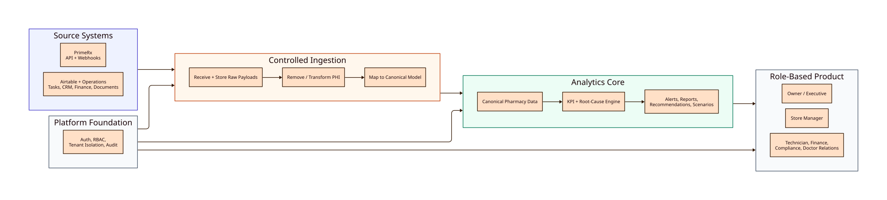
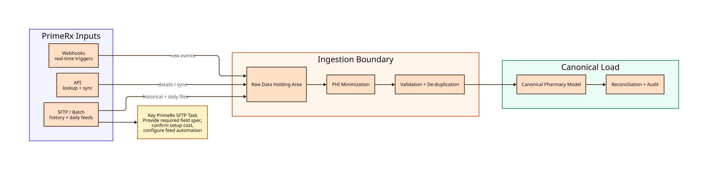

Multi-Pharmacy Analytics Platform Planning Notes
Current Planning Context
We are planning ahead before the pharmacy operations team and data owners are available to walk through the current system. The product should therefore be designed around a stable internal model and replaceable data-source adapters.
Update: Micro Merchant has confirmed that API support exists. We located the public Swagger UI at:
https://gatewayapi.micromerchantsystems.com/swagger/index.html
The Swagger UI loads an OpenAPI document from:
https://gatewayapi.micromerchantsystems.com/swagger/v2/swagger.json
The architecture should now treat API integration as the preferred path while keeping file-based exports as a fallback until production credentials, endpoint access, data coverage, rate limits, and privacy controls are confirmed.
Additional update: a local PDF named PrimeRx Webhook Onboarding.pdf was found in Downloads. It confirms that PrimeRx supports webhook notifications for selected events. Webhooks should be treated as a near real-time event notification channel, not as the only source for historical or complete analytics data.
The core planning principle is:
Build the product around a canonical pharmacy analytics model first, then map PrimeRx / Micro Merchant / Airtable data into it once exports and source details become available.
Initial Product Architecture

What Can Be Designed Before Real Data Is Available
- Product modules and user workflows
- Canonical pharmacy data model
- Data ingestion contract
- HIPAA-minimized field policy
- KPI definitions and dashboard structure
- Alert and exception rules
- Recommendation and scenario-engine assumptions
- Role-based permissions
- SaaS-ready boundaries
- Mock/sample data for early dashboard and workflow development
What Should Not Be Locked In Yet
- Exact PrimeRx / Micro Merchant export format
- Exact report names
- Exact source-field mappings
- Exact API capabilities, endpoints, authentication method, rate limits, and available data objects
- Exact patient-continuity strategy
- Final KPI formulas where source data availability is unknown
- Final automation method if API coverage is incomplete: CSV, SFTP, email parsing, scheduled report, manual upload, etc.
Recommended MVP Vertical Slice
This gives the team something buildable now. When real data becomes available, only the source adapter and mapping layer should need major changes.
PrimeRx / Micro Merchant Data Export Questions
Current Known Fact
Micro Merchant has confirmed that API support exists. Public Swagger documentation is available and describes the API as:
- Title:
PrimeAPI Docs (MMS.GatewayApi) - OpenAPI version:
3.0.1 - API version:
v3.6.1 - Authentication scheme:
Bearertoken in theAuthorizationheader - Token generation: documentation points to the MMS Gatekeeper service
- Required request identity fields mentioned in the API description:
ClientIdMemberIdIdentifierType, documented as always2Identifier, documented as the pharmacy NPI
The public OpenAPI spec currently exposes 41 paths across these groups:
HealthCheckPrescriptionPatientPatientAddressPatientInsurancePatientAllergyPatientDiagnosisPatientExternalProfileDocumentDeliveryFollowUpWorkFlowBatchManagementPrimeRxPPADiagnosisAllergy
Useful analytics-related API areas visible in Swagger:
- Prescription detail lookup
- Prescription detail by queue name
- Patient profile/search
- Patient insurance
- Prescriber information inside prescription detail
- Drug information inside prescription detail
- Primary/secondary/tertiary insurance names, BIN, PCN, and paid amounts
- Copay, total Rx amount, amount due, ingredient cost, other fees, discounts, tax, and total insurance paid
- Prescription status, queue name, order status, refill queue status, PA status, delivery method, fill date, dispense date, written date
- Pharmacy name, NPI, DEA, phone, fax, and address
Important concern:
The visible API schemas include direct patient identifiers and PHI fields such as patient name, DOB, phone, mobile number, street address, prescription number, notes, patient insurance member ID, and prescription images. The analytics platform must not ingest these fields into the SaaS database. The API connector should explicitly suppress, hash, bucket, or aggregate sensitive fields before data leaves the ingestion boundary.
Still unknown:
- Whether API access covers all required analytics data
- Whether API access is available directly to the pharmacy or only through an approved partner
- Whether API use requires additional contracts, fees, BAAs, or vendor approvals
- Whether the public Swagger endpoints are all available to this customer
- Whether the API supports bulk historical extraction
- Whether the API supports incremental sync by updated timestamp
- Whether the API supports webhook/event delivery
- Whether there are reporting endpoints for payer performance, drug profitability, financial close, acquisition cost, negative-margin claims, rejections, reversals, and adjustments
- Whether patient identifiers can be excluded at the API response level
- Whether a pseudonymous patient token can be generated by the vendor
- Whether rate limits support daily or multi-daily analytics sync across multiple stores
The next discussion with Micro Merchant should focus on API scope, access, documentation, security, and data coverage.
API-First Integration Implications
What This Changes
Since API support is confirmed, the HLD should assume an API connector as the first integration path:

API Connector Responsibilities
- Authenticate using the vendor-supported token flow.
- Store credentials securely.
- Pull only the minimum fields required for analytics.
- Prevent direct patient identifiers from entering the analytics database.
- Normalize pharmacy/store identity using NPI and any available stable store ID.
- Normalize prescription/fill data into the canonical model.
- Normalize payer fields: insurance name, BIN, PCN, group if available, paid amount.
- Normalize drug fields: NDC, drug name, brand/generic indicators if available.
- Normalize prescriber fields: NPI, name, practice/contact details where allowed.
- Track every sync attempt, request window, response status, and transformation result.
- Produce exception reports for missing, malformed, or unmapped data.
Webhook Receiver Responsibilities
- Expose a vendor-facing webhook intake endpoint.
- Validate the webhook source.
- Accept events quickly and process them asynchronously.
- Treat webhook payloads as PHI-containing until transformed.
- Deduplicate repeated events where PrimeRx provides stable identifiers.
- Avoid relying on strict event ordering.
- Use webhook events to trigger follow-up API pulls when full details are needed.
- Maintain receipt, processing, and suppression audit logs.
API Fit For MVP
The visible Swagger spec appears promising for prescription, drug, payer, prescriber, queue, and pharmacy-level data. However, it does not yet prove that the API can support the full analytics MVP.
Before relying on it fully, we need confirmation on:
- Bulk historical prescription/fill extraction
- Daily incremental sync
- Rejections, reversals, rebills, partial fills, deleted prescriptions, and adjustments
- Acquisition cost and gross-profit reliability
- Payer/PBM-level summaries
- Drug profitability reporting
- Negative-margin claim detection
- Multi-store access
- PHI-minimized response configuration
- API rate limits
- Sandbox/test credentials
Updated API Proof-of-Concept
PrimeRx Webhook Support
Confirmed From Local Onboarding PDF
File reviewed:
/Users/bhanuprakasholeti/Downloads/PrimeRx Webhook Onboarding.pdf
Document metadata from extracted text:
- Title:
PrimeRx Webhook Integration Guide - Version:
1.0 - Date:
6/23/2026 - Author:
Khemraj Bharrat
The document says PrimeRx webhooks provide near real-time notifications when events occur inside the PrimeRx Pharmacy Management System. When a subscribed event occurs, PrimeRx sends an HTTPS POST request with a JSON payload to a vendor-provided endpoint.
The webhook integration is described as unidirectional.
Webhook Authentication Options
PrimeRx supports webhook authentication methods determined during vendor implementation:
- Basic Authentication
- Secret key authentication using a secret key ID and secret access key
Security implication:
The analytics platform should store webhook secrets in a secure secret manager, never log secrets, and never expose secrets in client-side code or repositories.
Webhook Endpoint Requirements
The vendor endpoint must:
- Support HTTPS with TLS 1.2 or higher
- Present a valid SSL certificate
- Accept HTTP POST over HTTPS
- Accept JSON payloads
- Return a successful response after receipt
- Respond within 2 seconds
Design implication:
The webhook endpoint should acknowledge quickly after validation and durable queueing. Heavy processing, API enrichment, PHI transformation, KPI updates, and alert generation should happen asynchronously.
Supported Webhook Events
The onboarding guide lists these supported event types:
PatientCreatedPatientInfoUpdatedRxSavedRxDeliveryRxBilledRxFiledRxReversedLabelPrintedDPVDoneRphVDoneRxShippedRxTransmissionRejectedRxDeletedERxReceivedWorkflowTransition
Note:
The sample vendor configuration in the PDF includes RxPickedUp, but the supported event table does not list RxPickedUp. This should be clarified with PrimeRx.
Webhook Payload Shape
The guide says all webhook events use a common JSON structure, with an Event field identifying the notification type.
The sample payload includes top-level prescription fields such as:
EventRxNoRefillNoAuthRefillsDaysSupplyDateFilledDateOrderedStatusQtyOrderedQtyDispensedQtyRemainingSigPickedUpDatePickedTimePickedPrescriptionNotesRxOriginCodeRxOriginDescriptionDeliveryMethodTotalRxAmountPrimaryInsurancePaidSecondaryInsurancePaidTertiaryInsurancePaidPatientCopayPharmVerificationDoneBillTypeLabelPrintedFollowupTagCopayPaidQueueName
Nested sections include:
DrugPatientPrescriberPharmacyDiagnosisRxPayRecordsEPrescriptionData
Webhook Data Useful For Analytics
Webhook events are useful for:
- Near real-time prescription status changes
- New or updated prescriptions
- Billed prescriptions
- Reversed prescriptions
- Transmission rejections
- Shipping/delivery status
- Label printed status
- Drug pick verification completion
- Pharmacist verification completion
- Workflow queue transitions
- New patient events, if allowed by privacy policy
For the analytics product, the most relevant events are likely:
RxBilledRxReversedRxTransmissionRejectedRxSavedRxFiledRxDeliveryRxShippedWorkflowTransitionDPVDoneRphVDone
PHI Risk In Webhook Payloads
The sample payload includes PHI and direct identifiers, including:
- Patient number
- Patient first and last name
- DOB
- Gender
- Street address
- Phone numbers
- Driver license number
- Prescription number
- Prescription notes
- Prescriber contact details
Design implication:
Webhook payloads must enter a restricted ingestion boundary first. The analytics database should only receive HIPAA-minimized transformed data. Direct patient identifiers should be dropped, bucketed, aggregated, or replaced with approved pseudonymous tokens before downstream processing.
Webhook Delivery Behavior
The onboarding guide states:
- PrimeRx sends webhook notifications when subscribed events occur.
- Each notification is delivered as an HTTPS POST with JSON.
- Any HTTP 2xx response is considered successful.
- Any non-2xx response is considered failed.
- Consumers should handle duplicate notifications gracefully.
- Consumers should not rely on strict event ordering.
Still to confirm:
- Whether PrimeRx retries failed webhook deliveries
- Retry schedule and retry limit
- Whether events include a unique event ID
- Whether event timestamps are included beyond business dates
- Whether webhook signing/HMAC is available
- Whether IP allowlisting is available
- Whether payload fields can be suppressed or customized
- Whether webhook events can be configured per store/pharmacy
Updated Integration Strategy
Webhooks should be used together with API polling:
Recommended pattern:
- Use API sync for historical backfill, reconciliation, and daily completeness.
- Use webhooks for near real-time event awareness.
- Use webhook-triggered API pulls to enrich events when the webhook payload is incomplete or too PHI-heavy.
- Use periodic API reconciliation to catch missed, duplicated, or out-of-order webhook events.
Webhook Questions For PrimeRx
- Can webhook payload fields be customized or suppressed to exclude patient identifiers?
- Is HMAC/signature-based authentication supported in addition to Basic or secret key authentication?
- Does every webhook include a unique event ID?
- Does every webhook include an event-created timestamp?
- What retry behavior applies to failed deliveries?
- Can webhooks be configured per pharmacy/store?
- Can different stores use different webhook endpoints or credentials?
- Is
RxPickedUpofficially supported, since it appears in the sample configuration but not the supported event table? - Can webhook events be replayed for a time window if our endpoint is down?
- Are webhook payload schemas versioned?
- How much notice is provided before payload schema changes?
- Can we receive sandbox webhook events for development?
- Are IP allowlists available for PrimeRx webhook sender IPs?
- Are there limits on delivery volume?
- Are event ordering guarantees provided within a prescription, store, or pharmacy group?
Micro Merchant API Questions
1. API Availability and Access
- What API products or integration options are available for Micro Merchant / PrimeRx?
- Is API access available directly to pharmacy customers, or only to approved integration partners?
- What is the process to enable API access?
- Are there setup fees, monthly fees, per-call fees, or partner certification costs?
- Is a Business Associate Agreement, integration agreement, or security review required?
- Is there a technical contact or developer support channel for API onboarding?
- Is there a sandbox, test tenant, or sample environment?
- Can API access be enabled per pharmacy store, per pharmacy group, or across all stores under one organization?
2. API Documentation
- Can Micro Merchant provide API documentation?
- Does the documentation include:
- Endpoint list
- Request and response examples
- Authentication instructions
- Data dictionary
- Error codes
- Rate limits
- Pagination behavior
- Filtering options
- Webhook/event documentation, if available
- Are OpenAPI / Swagger specs available?
- Are SDKs available for any programming languages?
- Are sample API responses available for development planning?
3. Authentication and Security
- What authentication method is used?
- OAuth 2.0
- API key
- Client credentials
- Mutual TLS
- VPN/private network
- Other
- Can API credentials be scoped by store, organization, user role, or data type?
- Can credentials be rotated?
- Are audit logs available for API access?
- Are IP allowlists required or supported?
- Is all API traffic encrypted in transit?
- Are there specific requirements for storing API credentials?
- Can API access be read-only for analytics use cases?
4. Data Coverage
- Which data objects are available through the API?
- Does the API provide prescription/fill-level data?
- Does the API provide payer, PBM, BIN, PCN, and group data?
- Does the API provide reimbursement, copay, revenue, acquisition cost, and gross profit fields?
- Does the API provide drug, NDC, quantity, days supply, brand/generic, compound, vaccine, DME, OTC, or specialty indicators?
- Does the API provide prescriber/doctor information, including NPI and prescribing activity?
- Does the API provide claim rejection, reversal, prior authorization, rebill, partial fill, and adjustment information?
- Does the API provide store/location identifiers for multi-store analytics?
- Does the API provide financial close, deposit, receivable, or reconciliation data?
- Does the API provide employee/task/workflow data, or is that outside PrimeRx?
- Does the API provide document/license/compliance data, or is that outside PrimeRx?
5. PHI and Data Minimization Through API
- Can API responses be configured to exclude direct patient identifiers?
- Can we request only the minimum fields needed for analytics?
- Can the following be excluded from API responses?
- Patient name
- Patient address
- Date of birth
- Original prescription number
- Phone number
- SSN
- Medical record number
- Account number
- Prescription image
- Free-text notes containing identifiers
- Can the API return age range instead of DOB?
- Can the API return ZIP3, city, or market area instead of street address?
- Can the API return aggregate patient cohorts instead of patient-level records?
- Can the API return a vendor-generated pseudonymous patient token?
- If pseudonymous tokens are available, are they stable across time and stores?
- Can the token be generated without exposing the re-identification key outside the pharmacy environment?
6. Data Freshness and Sync Behavior
- Is the API real-time, near-real-time, or batch/report-based?
- How often is API data updated?
- Can we query by updated timestamp or date range?
- Are change-data-capture, delta sync, or incremental sync endpoints available?
- Are webhooks available for new fills, reversals, rejected claims, or updates?
- Can deleted, reversed, rebilled, or corrected records be detected through the API?
- Is there a recommended sync frequency for analytics platforms?
- Are there rate limits that would affect daily or multi-daily syncs across multiple stores?
7. Multi-Store API Support
- Can one API connection access multiple pharmacy stores?
- Does every API response include a stable store/location ID?
- Are NPI, NCPDP, Tax ID, or internal store IDs available?
- Are patient, payer, drug, and prescriber identifiers consistent across stores?
- Can API permissions be scoped so one pharmacy group cannot access another group's data?
- For future SaaS use, can each customer/pharmacy group have isolated API credentials?
8. API Reliability and Operations
- What uptime or availability expectations apply to the API?
- Is there a status page or incident notification process?
- What error codes indicate retryable vs. non-retryable failures?
- Are API responses idempotent and stable enough for import replay?
- Are there request IDs or correlation IDs for support troubleshooting?
- How long are historical records available through the API?
- Are there API versioning policies?
- How much notice is provided before breaking changes?
9. Reconciliation and Source of Truth
- Which API endpoint should be treated as the source of truth for prescription volume?
- Which endpoint should be treated as the source of truth for revenue?
- Which endpoint should be treated as the source of truth for reimbursement?
- Which endpoint should be treated as the source of truth for acquisition cost and gross profit?
- How are rejected claims represented?
- How are reversed claims represented?
- How are rebills, partial fills, deletes, and adjustments represented?
- Are report totals available through the API so imported data can be reconciled?
- Are there known differences between API data and PrimeRx screen/report totals?
10. API Proof-of-Concept Request
For planning and development, we should ask Micro Merchant for:
- API documentation
- Sandbox or test credentials
- Sample responses for required endpoints
- Data dictionary
- List of PHI fields and field-suppression options
- Rate-limit and pagination rules
- Multi-store access model
- Historical-data access rules
- Security and BAA requirements
- Vendor-recommended integration pattern for analytics platforms
1. Export Availability
- Does PrimeRx / Micro Merchant support periodic data exports for pharmacy operational, prescription, payer, drug, financial, and prescriber data?
- Which reports or export modules are available out of the box?
- Are exports available per pharmacy location, across multiple locations, or both?
- Can exports include historical data, or only data from the export date forward?
- How far back can historical data be exported?
- Are there limits on the number of rows, date ranges, stores, or reports that can be exported at one time?
2. Export Format
- What data formats are supported?
- CSV
- Excel / XLSX
- TXT / fixed-width
- XML
- JSON
- Other
- Are export files structured consistently over time?
- Are field names stable, or can they vary by report, store, configuration, or software version?
- Is there a data dictionary that defines each exported field?
- Are sample export files available for development and testing?
- Can exports be generated in a de-identified or limited-field format?
3. Exported Data Fields
- What prescription or fill-level fields can be exported?
- Can the export include:
- Fill date or reporting date
- Store/location
- New/refill indicator
- Transfer indicator
- Drug name
- NDC
- Quantity
- Days supply
- Prescriber NPI
- Insurance name
- BIN / PCN / group
- Gross revenue
- Copay
- Insurance reimbursement
- Acquisition cost
- Estimated gross profit
- Reversal status
- Rejection status
- Paid status
- Can payer/PBM-level reports be exported?
- Can drug profitability reports be exported?
- Can prescriber or doctor-referral reports be exported?
- Can patient demographic data be exported only as aggregates or de-identified cohorts?
- Can claim rejection, prior authorization, reversal, and negative-margin claim reports be exported?
- Can delivery, pickup, mail, compound, vaccine, DME, or OTC indicators be exported if available?
4. PHI, Privacy, and Data Minimization
- Can exports be configured to exclude direct patient identifiers?
- Can the following fields be excluded from all exports?
- Patient name
- Patient address
- Date of birth
- Original prescription number
- Phone number
- SSN
- Medical record number
- Account number
- Prescription image
- Free-text notes containing patient identifiers
- Can PrimeRx generate a pseudonymous patient token or hashed identifier for retention/cohort analytics?
- If pseudonymous tokens are supported, where is the key or mapping stored?
- Can exports provide age range instead of DOB?
- Can exports provide ZIP3, city, market area, or store trade area instead of full address?
- Can reports be restricted to aggregate patient counts instead of patient-level rows?
- Are there vendor guidelines for HIPAA-compliant export handling?
5. API / SDK / Integration Support
- Does PrimeRx / Micro Merchant provide an API?
- If yes, what type of API is available?
- REST
- SOAP
- FHIR / HL7
- Database connector
- Report API
- Other
- Is there an SDK or developer toolkit?
- Is API access available to customers directly, or only through approved integration partners?
- What authentication method is used?
- Are API credentials available per pharmacy, per organization, or per user?
- Are there rate limits, usage limits, or data-access restrictions?
- Is there a sandbox or test environment?
- Is API documentation available?
- Are webhooks or event-based notifications supported?
6. Automation and Scheduling
- Can exports be scheduled automatically?
- Can exports run daily without manual user action?
- Can exports run multiple times per day?
- What scheduling options are supported?
- Daily
- Weekly
- Monthly
- Custom time
- End-of-day close
- Can scheduled exports be delivered to:
- SFTP folder
- Secure email
- Local network folder
- Cloud storage
- API endpoint
- Vendor integration endpoint
- Can exports be automatically named with store, report type, and date?
- Can failed exports trigger an alert?
- Is there an export log showing when each file was generated and whether it succeeded?
- Can multiple stores be configured to export on the same schedule?
7. Data Accuracy and Reconciliation
- Which report should be considered the source of truth for prescription volume?
- Which report should be considered the source of truth for revenue?
- Which report should be considered the source of truth for reimbursement?
- Which report should be considered the source of truth for acquisition cost and gross profit?
- How are reversed claims represented in exports?
- How are rejected claims represented in exports?
- How are rebills, reversals, partial fills, deleted prescriptions, and adjustments represented?
- Are report totals expected to match financial close reports?
- Are there known differences between operational reports and accounting/reconciliation reports?
- Can exports include report-generation timestamp and report parameters?
8. Multi-Store Support
- Can exports include a store identifier for every row?
- Is there a stable store ID, NPI, NCPDP, or other location identifier?
- Can one export include all stores?
- If each store exports separately, can the file naming or metadata identify the store?
- Are payer, drug, prescriber, and patient identifiers consistent across stores?
- Are there differences in configuration between stores that could affect report fields?
9. Security and Access Control
- Who can generate exports inside PrimeRx?
- Can export permissions be limited by user role?
- Can export access be audited?
- Are exports encrypted at rest or in transit?
- Does PrimeRx support SFTP or another secure delivery method?
- Are there vendor requirements for storing exported files?
- Are Business Associate Agreements or integration agreements required for API/export access?
10. Operational Support
- Who from PrimeRx / Micro Merchant can support export setup?
- Is there a technical integration contact?
- Is there a standard implementation guide for analytics/reporting integrations?
- Are there fees for API access, scheduled exports, custom reports, or integration support?
- What is the expected lead time to enable exports or API access?
- Are custom reports available if standard exports do not include required fields?
- Can PrimeRx review our required field list and identify what is supported, unsupported, or custom?
11. Specific Development Requests
- Can PrimeRx provide sample exports for:
- Prescription/fill data
- Payer performance
- Drug profitability
- Rejections/reversals
- Prescriber/doctor activity
- Store summary
- Financial/reimbursement summary
- Can PrimeRx provide a data dictionary for those exports?
- Can PrimeRx confirm which fields contain PHI and which can be safely excluded?
- Can PrimeRx confirm the best export method for daily automated analytics ingestion?
- Can PrimeRx provide a recommended architecture for customers building external analytics dashboards?
Critical Questions To Ask First
If meeting time is short, ask these first:
- Do you support scheduled daily exports for PrimeRx / Micro Merchant data?
- What export formats are supported?
- What reports and fields can be exported?
- Can exports exclude direct patient identifiers?
- Is API or SDK access available?
- Can exports be automated to SFTP, secure email, or another secure destination?
- Can you provide sample exports and a data dictionary?
- Are there fees, approvals, BAAs, or vendor agreements required?
- How are reversals, rejected claims, rebills, and adjustments represented?
- What is the recommended way to support multi-store analytics?
Internal Follow-Up After PrimeRx Responds
After receiving answers, the project team should produce:
- Source export inventory
- Supported field matrix
- Excluded PHI field list
- Data dictionary
- Source-to-canonical mapping
- Automation approach recommendation
- Import validation rules
- Reconciliation strategy
- Security and compliance review
- MVP ingestion plan